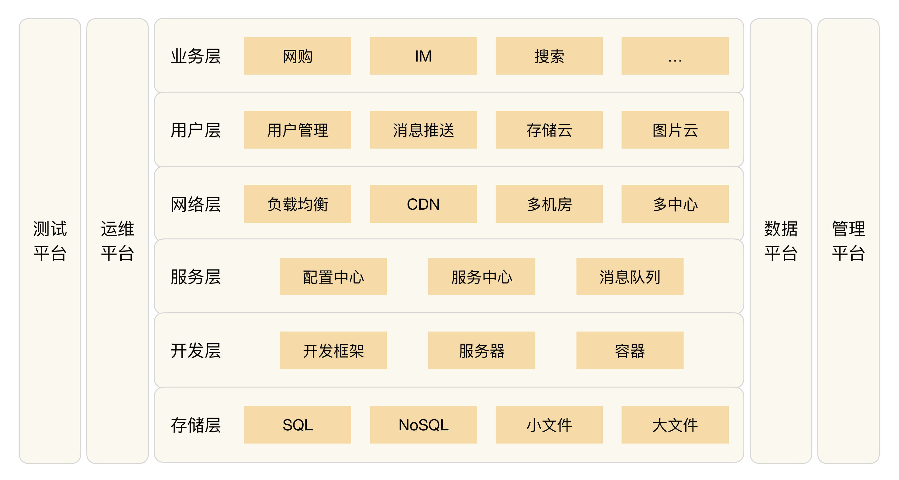
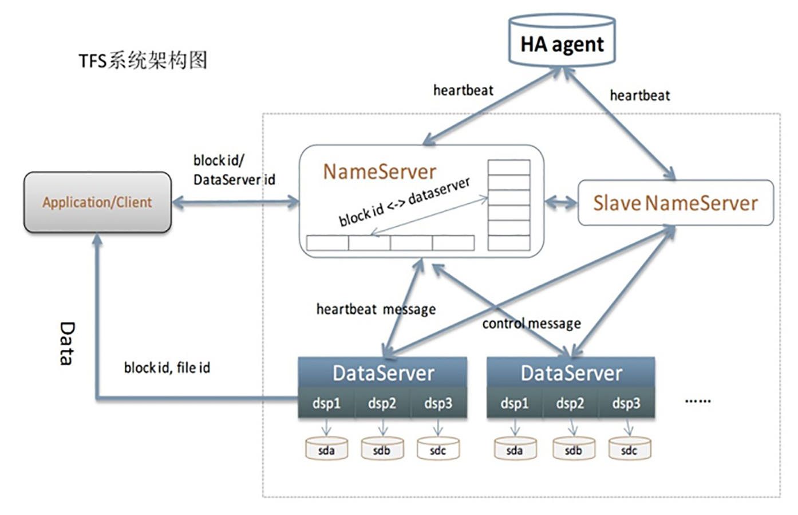
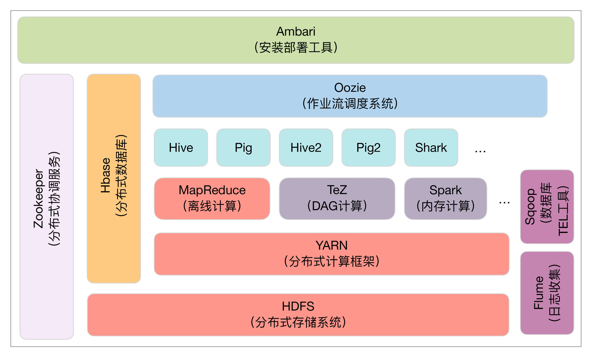

- 00 开篇词 照着做，你也能成为架构师！.md
- 01 架构到底是指什么？.md
- 02 架构设计的历史背景.md
- 03 架构设计的目的.md
- 04 复杂度来源：高性能.md
- 05 复杂度来源：高可用.md
- 06 复杂度来源：可扩展性.md
- 07 复杂度来源：低成本、安全、规模.md
- 08 架构设计三原则.md
- 09 架构设计原则案例.md
- 10 架构设计流程：识别复杂度.md
- 11 架构设计流程：设计备选方案.md
- 12 架构设计流程：评估和选择备选方案.md
- 13 架构设计流程：详细方案设计.md
- 14 高性能数据库集群：读写分离.md
- 15 高性能数据库集群：分库分表.md
- 16 高性能NoSQL.md
- 17 高性能缓存架构.md
- 18 单服务器高性能模式：PPC与TPC.md
- 19 单服务器高性能模式：Reactor与Proactor.md
- 20 高性能负载均衡：分类及架构.md
- 21 高性能负载均衡：算法.md
- 22 想成为架构师，你必须知道CAP理论.md
- 23 想成为架构师，你必须掌握的CAP细节.md
- 24 FMEA方法，排除架构可用性隐患的利器.md
- 25 高可用存储架构：双机架构.md
- 26 高可用存储架构：集群和分区.md
- 27 如何设计计算高可用架构？.md
- 28 业务高可用的保障：异地多活架构.md
- 29 异地多活设计4大技巧.md
- 30 异地多活设计4步走.md
- 31 如何应对接口级的故障？.md
- 32 可扩展架构的基本思想和模式.md
- 33 传统的可扩展架构模式：分层架构和SOA.md
- 34 深入理解微服务架构：银弹 or 焦油坑？.md
- 35 微服务架构最佳实践 - 方法篇.md
- 36 微服务架构最佳实践 - 基础设施篇.md
- 37 微内核架构详解.md
- 38 架构师应该如何判断技术演进的方向？.md
- 39 互联网技术演进的模式.md
- 40 互联网架构模板：存储层技术.md
- 41 互联网架构模板：开发层和服务层技术.md
- 42 互联网架构模板：网络层技术.md
- 43 互联网架构模板：用户层和业务层技术.md
- 44 互联网架构模板：平台技术.md
- 45 架构重构内功心法第一式：有的放矢.md
- 46 架构重构内功心法第二式：合纵连横.md
- 47 架构重构内功心法第三式：运筹帷幄.md
- 48 再谈开源项目：如何选择、使用以及二次开发？.md
- 49 谈谈App架构的演进.md
- 50 架构实战：架构设计文档模板.md
- 51 如何画出优秀的软件系统架构图？.md
- 加餐｜业务架构实战营开营了.md
- 加餐｜单服务器高性能模式性能对比.md
- 加餐｜扒一扒中台皇帝的外衣.md
- 如何高效地学习开源项目 华仔，放学别走！ 第3期.md
- 新书首发 《从零开始学架构》.md
- 架构专栏特别放送 华仔，放学别走！ 第2期.md
- 架构专栏特别放送 华仔，放学别走！第1期.md
- 架构师必读书单 华仔，放学别走！ 第5期.md
- 架构师成长之路 华仔，放学别走！ 第4期.md
- 结束语 坚持，成就你的技术梦想.md
40 互联网架构模板：存储层技术
很多人对于BAT的技术有一种莫名的崇拜感，觉得只有天才才能做出这样的系统，但经过前面对架构的本质、架构的设计原则、架构的设计模式、架构演进等多方位的探讨和阐述，你可以看到，其实并没有什么神秘的力量和魔力融合在技术里面，而是业务的不断发展推动了技术的发展，这样一步一个脚印，持续几年甚至十几年的发展，才能达到当前技术复杂度和先进性。
抛开BAT各自差异很大的业务，站在技术的角度来看，其实BAT的技术架构基本是一样的。再将视角放大，你会发现整个互联网行业的技术发展，最后都是殊途同归。
如果你正处于一个创业公司，或者正在为成为另一个BAT拼搏，那么深入理解这种技术模式（或者叫技术结构、技术架构），对于自己和公司的发展都大有裨益。
互联网的标准技术架构如下图所示，这张图基本上涵盖了互联网技术公司的大部分技术点，不同的公司只是在具体的技术实现上稍有差异，但不会跳出这个框架的范畴。

从本期开始，我将逐层介绍每个技术点的产生背景、应用场景、关键技术，有的技术点可能已经在前面的架构模式部分有所涉及，因此就不再详细展开技术细节了，而是将关键技术点分门别类，进而形成一张架构大图，让架构师对一个公司的整体技术架构有一个完整的全貌认知。
今天我们首先来聊聊互联网架构模板的“存储层”技术。
SQL
SQL即我们通常所说的关系数据。前几年NoSQL火了一阵子，很多人都理解为NoSQL是完全抛弃关系数据，全部采用非关系型数据。但经过几年的试验后，大家发现关系数据不可能完全被抛弃，NoSQL不是No SQL，而是Not Only SQL，即NoSQL是SQL的补充。
所以互联网行业也必须依赖关系数据，考虑到Oracle太贵，还需要专人维护，一般情况下互联网行业都是用MySQL、PostgreSQL这类开源数据库。这类数据库的特点是开源免费，拿来就用；但缺点是性能相比商业数据库要差一些。随着互联网业务的发展，性能要求越来越高，必然要面对一个问题：将数据拆分到多个数据库实例才能满足业务的性能需求（其实Oracle也一样，只是时间早晚的问题）。
数据库拆分满足了性能的要求，但带来了复杂度的问题：数据如何拆分、数据如何组合？这个复杂度的问题解决起来并不容易，如果每个业务都去实现一遍，重复造轮子将导致投入浪费、效率降低，业务开发想快都快不起来。
所以互联网公司流行的做法是业务发展到一定阶段后，就会将这部分功能独立成中间件，例如百度的DBProxy、淘宝的TDDL。不过这部分的技术要求很高，将分库分表做到自动化和平台化，不是一件容易的事情，所以一般是规模很大的公司才会自己做。中小公司建议使用开源方案，例如MySQL官方推荐的MySQL Router、360开源的数据库中间件Atlas。
假如公司业务继续发展，规模继续扩大，SQL服务器越来越多，如果每个业务都基于统一的数据库中间件独立部署自己的SQL集群，就会导致新的复杂度问题，具体表现在：
- 数据库资源使用率不高，比较浪费。
- 各SQL集群分开维护，投入的维护成本越来越高。
因此，实力雄厚的大公司此时一般都会在SQL集群上构建SQL存储平台，以对业务透明的形式提供资源分配、数据备份、迁移、容灾、读写分离、分库分表等一系列服务，例如淘宝的UMP（Unified MySQL Platform）系统。
NoSQL
首先NoSQL在数据结构上与传统的SQL的不同，例如典型的Memcache的key-value结构、Redis的复杂数据结构、MongoDB的文档数据结构；其次，NoSQL无一例外地都会将性能作为自己的一大卖点。NoSQL的这两个特点很好地弥补了关系数据库的不足，因此在互联网行业NoSQL的应用基本上是基础要求。
由于NoSQL方案一般自己本身就提供集群的功能，例如Memcache的一致性Hash集群、Redis 3.0的集群，因此NoSQL在刚开始应用时很方便，不像SQL分库分表那么复杂。一般公司也不会在开始时就考虑将NoSQL包装成存储平台，但如果公司发展很快，例如Memcache的节点有上千甚至几千时，NoSQL存储平台就很有意义了。首先是存储平台通过集中管理能够大大提升运维效率；其次是存储平台可以大大提升资源利用效率，2000台机器，如果利用率能提升10%，就可以减少200台机器，一年几十万元就节省出来了。
所以，NoSQL发展到一定规模后，通常都会在NoSQL集群的基础之上再实现统一存储平台，统一存储平台主要实现这几个功能：
- 资源动态按需动态分配：例如同一台Memcache服务器，可以根据内存利用率，分配给多个业务使用。
- 资源自动化管理：例如新业务只需要申请多少Memcache缓存空间就可以了，无需关注具体是哪些Memcache服务器在为自己提供服务。
- 故障自动化处理：例如某台Memcache服务器挂掉后，有另外一台备份Memcache服务器能立刻接管缓存请求，不会导致丢失很多缓存数据。
当然要发展到这个阶段，一般也是大公司才会这么做，简单来说就是如果只有几十台NoSQL服务器，做存储平台收益不大；但如果有几千台NoSQL服务器，NoSQL存储平台就能够产生很大的收益。
小文件存储
除了关系型的业务数据，互联网行业还有很多用于展示的数据。例如，淘宝的商品图片、商品描述；Facebook的用户图片；新浪微博的一条微博内容等。这些数据具有三个典型特征：一是数据小，一般在1MB以下；二是数量巨大，Facebook在2013年每天上传的照片就达到了3.5亿张；三是访问量巨大，Facebook每天的访问量超过10亿。
由于互联网行业基本上每个业务都会有大量的小数据，如果每个业务都自己去考虑如何设计海量存储和海量访问，效率自然会低，重复造轮子也会投入浪费，所以自然而然就要将小文件存储做成统一的和业务无关的平台。
和SQL和NoSQL不同的是，小文件存储不一定需要公司或者业务规模很大，基本上认为业务在起步阶段就可以考虑做小文件统一存储。得益于开源运动的发展和最近几年大数据的火爆，在开源方案的基础上封装一个小文件存储平台并不是太难的事情。例如，HBase、Hadoop、Hypertable、FastDFS等都可以作为小文件存储的底层平台，只需要将这些开源方案再包装一下基本上就可以用了。
典型的小文件存储有：淘宝的TFS、京东JFS、Facebook的Haystack。
下图是淘宝TFS的架构：

大文件存储
互联网行业的大文件主要分为两类：一类是业务上的大数据，例如Youtube的视频、电影网站的电影；另一类是海量的日志数据，例如各种访问日志、操作日志、用户轨迹日志等。和小文件的特点正好相反，大文件的数量没有小文件那么多，但每个文件都很大，几百MB、几个GB都是常见的，几十GB、几TB也是有可能的，因此在存储上和小文件有较大差别，不能直接将小文件存储系统拿来存储大文件。
说到大文件，特别要提到Google和Yahoo，Google的3篇大数据论文（Bigtable/Map- Reduce/GFS）开启了一个大数据的时代，而Yahoo开源的Hadoop系列（HDFS、HBase等），基本上垄断了开源界的大数据处理。当然，江山代有才人出，长江后浪推前浪，Hadoop后又有更多优秀的开源方案被贡献出来，现在随便走到大街上拉住一个程序员，如果他不知道大数据，那基本上可以确定是“火星程序员”。
对照Google的论文构建一套完整的大数据处理方案的难度和成本实在太高，而且开源方案现在也很成熟了，所以大数据存储和处理这块反而是最简单的，因为你没有太多选择，只能用这几个流行的开源方案，例如，Hadoop、HBase、Storm、Hive等。实力雄厚一些的大公司会基于这些开源方案，结合自己的业务特点，封装成大数据平台，例如淘宝的云梯系统、腾讯的TDW系统。
下面是Hadoop的生态圈：

小结
今天我为你讲了互联网架构模板中的存储层技术，可以看到当公司规模发展到一定阶段后，基本上都是基于某个开源方案搭建统一的存储平台，希望对你有所帮助。
这就是今天的全部内容，留一道思考题给你吧，既然存储技术发展到最后都是存储平台，为何没有出现存储平台的开源方案，但云计算却都提供了存储平台方案？
© 2019 - 2023 Liangliang Lee. Powered by gin and hexo-theme-book.